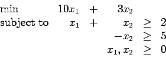
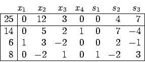

- (a)
-
- (b)
-

is x1=0, x2=5, x3=0.
- (a)
- (5 points) Give a dual problem to this linear program.
- (b)
- (10 points) Use complementary slackness to find an optimal solution to your dual problem.
- (a)
- (5 points) Write down a pivot matrix to represent the simplex pivot.
- (b)
- (10 points) Use the pivot matrix to find the reduced costs and hence show that the resulting tableau is in optimal form. What is the optimal solution?
Use the method of artificial variables to find an initial canonical form for this linear program. You should obtain the basic feasible solution x1=2, x2=1, x3=x4=0. (If you have a choice for the entering column, choose the first possible column. You should only need two pivots to solve the artificial problem, once you have a canonical form for the artificial problem.)

has optimal tableau

How much would you be willing to pay for an additional unit of Resource 2? What is the maximum amount of this resource that you are prepared to buy at these prices? If instead someone wished to purchase the resource from you, what is the maximum you would be prepared to sell at this price?
- (a)
- (10 points)
Graph the feasible region for (D).
Use this picture and
complementary slackness to show that in any optimal solution
to (P) we must have x3=0.
- (b)
- (10 points) Now set b1=19 and b2=9. The primal-dual pair has an optimal solution with x1=7, x2=1, x3=0, y1=1, and y2=0. It has become possible to produce an additional product x4 that uses 3 units of resource 1 and 4 units of resource 2. What price c4 must be charged for this product for it to be worthwhile to produce it?